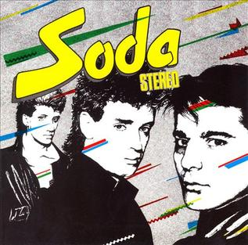

Soda Stereo
1984

Concepto
Contexto. Lanzado el 27 de agosto de 1984 por CBS, fue producido por Federico Moura, líder de Virus. Se grabó en Buenos Aires, en turnos rotativos con distintos ingenieros.
Qué representa. Un retrato ácido y divertido de la Argentina de los 80: frivolidad, consumismo, televisión y cultura juvenil. Zeta Bosio lo definió como una ironía más que una crítica.
Sonido. New wave y pop rock con ska, reggae y guiños a The Police, Madness y The Specials. Incluye “Trátame suavemente”, versión de una canción de Daniel Melero y Los Encargados.
Qué buscaba. Divertir y bailar sin perder la mirada crítica sobre la sociedad de su tiempo.
Por qué importa. Los llevó al mainstream argentino y mostró el potencial que después desarrollarían.
Canciones
- 01¿Por qué no puedo ser del jet set?
- 02Sobredosis de T.V.
- 03Te hacen falta vitaminas
- 04Trátame suavemente
- 05Dietético
- 06Tele-Ka
- 07Ni un segundo
- 08Un misil en mi placard
- 09El tiempo es dinero
- 10Afrodisíacos
- 11Mi novia tiene bíceps